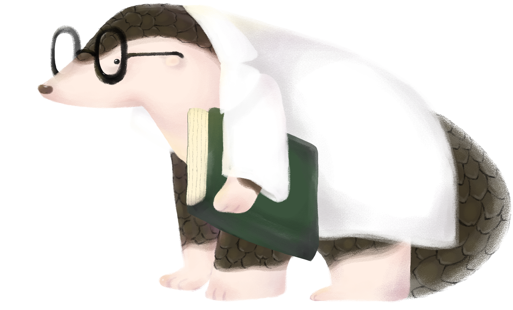

村長穿山甲
村長穿山甲是翠翠島嶼的村長，負責管理整個村莊的日常運作。他智慧而睿智，深受村民的信任和尊敬。據村長所說，人類製作出一種方形、移動很快的機械物體，對牠們來說非常可怕，甚至可能威脅到牠們的生存環境。村長經常提醒其他穿山甲保持警惕，並帶領大家共同努力保護翠翠島嶼的和平與安全。
花花穿山甲
花花穿山甲熱愛花草，是翠翠島嶼的植物專家。她喜歡探索翠翠島嶼的每個角落，並對這片島嶼的植物充滿了好奇與熱情。無論是高聳的樹木還是低矮的灌木叢，她都希望認識並研究牠們。花花穿山甲經常帶著一本自製的植物圖鑑，記錄著她發現的每一種植物，並為翠翠島嶼的生態平衡貢獻自己的力量。

流浪穿山甲
流浪穿山甲是一隻總是形單影隻的穿山甲，他一直在尋找屬於自己的家園。據他所說，有一天清晨醒來時，他發現自己的家人和住所都消失了，這讓他陷入了無盡的孤獨。儘管如此，他並沒有放棄，依然滿懷希望地在翠翠島嶼上不懈地尋找著。
饕客穿山甲
饕客穿山甲是翠翠島嶼的美食專家，以烹飪螞蟻料理聞名全島。他不僅擅長創造新奇的料理，更擅長將簡單的食材變成令人垂涎的佳餚。他經常邀請島上的朋友們一起享用他精心準備的美食，用美食拉近大家的距離。饕客穿山甲的夢想是開一間屬於自己的「穿山甲餐館」。


媽媽穿山甲
媽媽中毒寶寶穿山甲是一隻經歷了艱難成長的小穿山甲。他的身體顏色似乎與水源的污染有關，這也讓牠的成長過程充滿挑戰。幸運的是，他擁有堅強的意志力，即使面對再大的困難，也從未放棄過希望。他希望有一天能找到讓自己痊癒的方法，並幫助翠翠島嶼上的其他動物遠離污染的威脅。
博士穿山甲
博士穿山甲是翠翠島嶼的科學家，以智慧超群而聞名。他熱衷於研究島上的其他生物和自然現象，並致力於尋找解決環境問題的方法。他的實驗室中堆滿了各種筆記和標本，是翠翠島嶼的知識寶庫。博士穿山甲的夢想是讓翠翠島嶼成為一個與自然和諧共處的樂園。
